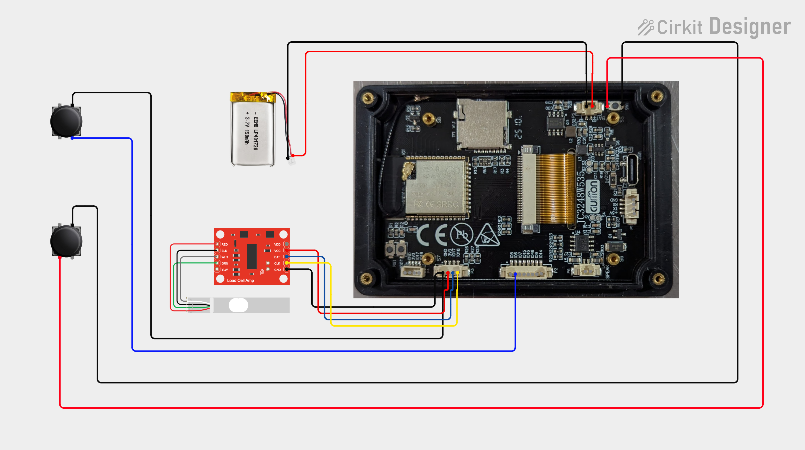

Guition JC3248W535C
The ESP32-S3 touchscreen board at the heart of PourBot. Use this exact board model with the linked firmware.
View display board ↗THE POURBOT BUILD GUIDE
Build a touchscreen coffee scale that puts weight, flow and time at your fingertips. Gather your parts, print the enclosure, and follow the connections below.
01 / YOUR WORKBENCH
These are the parts used for this build. Check the selected variant, dimensions and connector pitch before ordering.
The ESP32-S3 touchscreen board at the heart of PourBot. Use this exact board model with the linked firmware.
View display board ↗One button wakes the scale from standby. The other extends the board’s battery/power button to the enclosure.
View buttons ↗The linked battery was chosen for its physical fit. Confirm its voltage, dimensions and plug polarity match the board before connecting it.
View battery ↗The load cell senses weight; the HX711 amplifier connects it to the controller. Choose the load-cell variant that fits your printed mount.
View weighing hardware ↗One 4-pin for the HX711, one 8-pin for the expansion header, and one 2-pin battery lead. “JST” alone does not identify the correct pitch or polarity.
View connector assortment ↗Print the enclosure and weighing platform. The editable STEP file lets you fine-tune button openings for your particular switches.
Get the print files ↗Also on the bench: a USB-C data cable, soldering iron, solder, wire, insulation or heat-shrink, a multimeter, suitable mounting hardware and a known calibration weight. Use flexible 22 AWG wire for the power-button extension if it fits the pads without strain.
02 / GET READY
Connect the Guition board to your computer with a USB-C data cable. Open the installer in a supported desktop browser, such as Chrome or Edge, and choose Connect & Install.
Open firmware installer ↗For a new build, use the browser installer. For an already configured PourBot, use its OTA updater to preserve your settings.
Test-fit both buttons in the base before assembly. Nominally identical 12 mm buttons can vary between manufacturers.
Adjust the STEP model’s openings if needed. Aim for a snug fit that does not bind the button or leave it pressed.
03 / MAKE THE CONNECTIONS
Disconnect USB and the battery before soldering. Check connector polarity and board labels with a meter; do not rely only on wire colors or the orientation of the drawing.

Make up the harness using the board’s printed signal labels. This table lists signal connections, not connector cavity order.
| Guition connection | HX711 connection | Purpose |
|---|---|---|
| GPIO17 | DT / DOUT / DAT | Weight data |
| GPIO18 | SCK / CLK | Clock |
| 3.3 V | Supply input | Amplifier power |
| GND | GND | Common ground |
Some HX711 boards have separate VCC and VDD inputs, as depicted in the illustration. Follow your module’s pinout and power both required rails appropriately for 3.3 V operation; do not copy an unconnected supply pin from the drawing. Keep the ESP32 data signal at 3.3 V logic.
Connect the load cell’s excitation pair to E+ / E− and signal pair to A+ / A−. Follow the load cell’s own wire identification: red, black, white and green are common, but colors are not universal.
Connect a normally-open momentary switch between GPIO6 and GND. The firmware enables the wake pin’s pull-up; pressing the button pulls the pin low to wake the scale from deep standby.
On a four-leg tactile switch, identify the two separate contact groups with a continuity meter. Use one terminal from each group, so continuity occurs only while pressed.
Turn the display over and remove the four screws securing its back plate. Locate the onboard battery/power button shown beside the battery connector in the diagram.
Solder one wire to each of the switch’s two electrically separate contacts, then connect those wires to the second normally-open enclosure button. This places the new button in parallel with the original.
You can leave the onboard button in place. Removing it is optional and requires care to avoid lifting the solder pads. Insulate and secure the extension wires so the tiny pads carry no cable strain.
This is a switch-contact extension—not a connection across battery positive and negative. The power button and GPIO6 wake button serve different functions.
Match the battery’s positive and negative leads to the board’s labeled battery connector. Verify polarity with a meter before plugging it in; a matching connector shell does not guarantee matching polarity.
Leave the battery disconnected until all solder joints and wiring have been inspected. Secure it in the enclosure without pinching, bending or puncturing the pouch.
The current firmware uses a separate I²C pair for the fuel gauge:
| MAX17048 signal | Guition pin |
|---|---|
| SDA / data | GPIO7 |
| SCL / clock | GPIO15 |
| GND | Common ground |
Do not use GPIO17/18 for the gauge. Those pins are already used by the HX711, which is not an I²C device. Gauge power, battery sensing and pull-ups must follow the pinout of your specific breakout. The firmware’s gauge driver is written for the Adafruit #5580 arrangement with pull-ups to 3.3 V.
The optional gauge is not included in the diagram above.
04 / PUT IT TOGETHER
05 / READY FOR YOUR FIRST POUR
Power up with nothing on the scale and allow the startup tare to finish. Check that the display settles near zero.
Calibrate with a known weight, then remove and replace it to check that the reading repeats reliably.
Test the enclosure power button and the GPIO6 wake button. Confirm neither stays pressed when the enclosure is closed.
If readings drift or fail to return to zero, check for mechanical contact around the platform before adjusting calibration again.
Your scale is ready.
Make the next pour count.